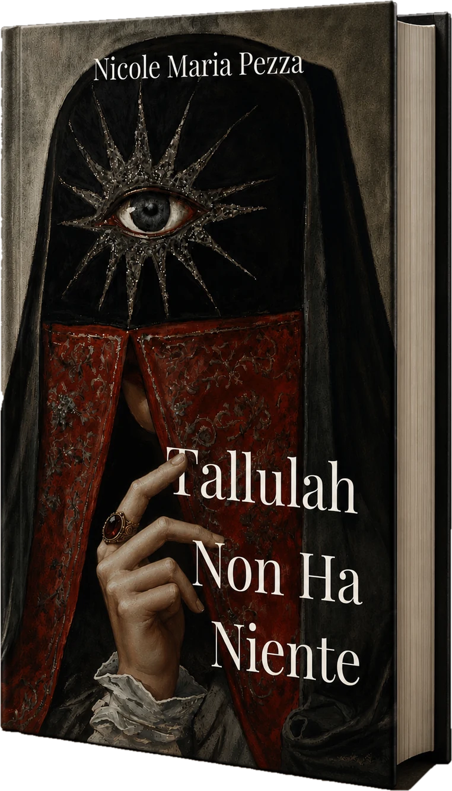

Un romanzo di Nicole Maria Pezza
Tallulah Non Ha Niente

Consumata dalla perdita e da uno struggimento che non trova sfogo, Tallulah attraversa un mondo in rovina, insinuandosi nelle vite degli uomini come santa, arma, cortigiana, mito e testimone in egual misura.
Tallulah Non Ha Niente è un romanzo sulla devozione, la crudeltà e il terribile desiderio di consegnarsi a qualcosa di assoluto.
Santa, arma, cortigiana, mito, testimone

Santa
Tallulah era l’eroe, Tallulah era la santa dalle mani bianche come colombe.

Arma
Dimenticandomi che sono, e sempre sarò, la mano che cala la scure.

Cortigiana
Sorrideva a tutti coloro che la propria carne avrebbe condotto a un lungo viaggio.

Mito
Il villaggio brucia e la vecchia si pettina i capelli.

Testimone
La Velata osservava tutte le cose e soprassedeva al male, testimoniava del bene.
Leggi le prime pagine
Capitolo primo
– Dove fai un deserto, lo chiami amore. Hai dominato e spadroneggiato su di me e sul mio corpo, e l’hai chiamata unione. Mi hai vincolato a te con tutti gli stratagemmi preferiti e l’hai chiamato legame. Sei un morbo, Tallulah, o forse la siccità, bruci tutto quello che hai attorno e non lasci niente. A me non hai lasciato niente.
Aveva parlato come un profeta e per tre volte l’aveva offesa: per tre volte le aveva rinfacciato i suoi mali e alla terza il gallo aveva cantato, e lei pianto.
Era tutto vero.
Una volta si era cosparsa il corpo nudo di olii profumati perché lui provasse desiderio per la carne di lei ma non gli fosse in potere di ghermirla, e Tallulah seguitò a ridere ogni volta che gli scivolava tra le dita, perché gli aveva raccontato che si trattava di un gioco da letto e non un gioco di potere, e lui ci aveva creduto.
Di sera lei si adagiava il suo capo in grembo e gli narrava favole a lume di luna, perché lui vedesse tra i suoi ricci i fili selenici e pensasse, il tempo che bastava al principe per salvare la principessa, che sua madre fosse lì, e avesse raggiunto la senilità viva per coccolarlo e leggergli storie al di sotto della cortina dei suoi capelli bianchi.
Tallulah interruppe il pianto suscitato dalle tre offese, gli disse che l’amava e sette volte gli fece nodi ai capelli per ricordargli che un patto è per sempre, tanto più che loro avevano condiviso sperma e sangue e lacrime e chicchi di luna: se lui se ne fosse andato, sarebbe diventata una cinica elegante come lo era stata prima, quando aveva il cuore spinoso ricoperto di miele, e lui l’aveva fatta innamorare leccandoglielo via fino all’ultima goccia.
Citando un vecchio poeta, il suo amore l’aveva nominata creatrice di solitudini e alla sua aridità flemmatica lei gli rispose con una ballata e versò nuove lacrime amare, tante che bastassero a riempirgli gli occhi di pietà ma non il torso di pioggia, tante per dimostrargli l’affetto ma non la paura. Si mise le sue mani sui fianchi e gli sussurrò cose dolci e cose cattive insieme come se fosse un cane rabbioso da placare, tanto da spingerlo a cantare canzoni lente con la sua bellissima voce e a chiamarla “puttana, puttana”.
– Sei un vampiro, sei un vampiro.
Il resto è nel libro.
Preordina
Sull’autrice
Nicole Maria Pezza è una scrittrice italiana che vive con la valigia tra una città e l’altra e scrive delle cose che ti seguono ovunque tu vada, come la devozione, la violenza, il desiderio.
La sua scrittura è influenzata dai mondi febbrili del realismo magico sudamericano, in particolare da García Márquez e Isabel Allende, e dall’ineluttabilità dei grandi romanzi russi.
In Tallulah Non Ha Niente insegue ciò che la affascina da sempre: lo straniamento e la sensazione di abitare il mondo come se il proprio posto fosse altrove.